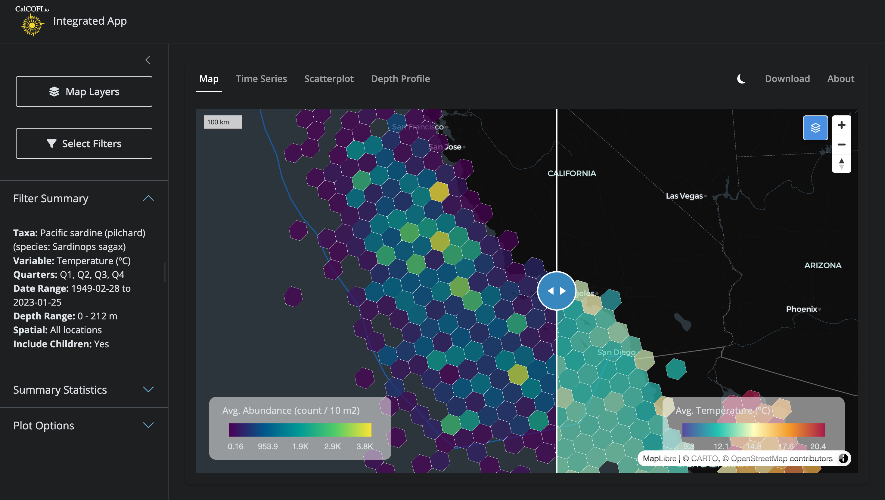

The CalCOFI interactive app renders hexagonal heatmaps of species occurrence and oceanographic variables — sardine larvae densities, sea-surface temperature, salinity, chlorophyll — across the entire CalCOFI sampling area, at any zoom level, in seconds. The engine that makes this possible is H3T, a tile service that converts a database query into a stream of hexagon tiles on demand.

Figure 4.1: Side-by-side comparison in the CalCOFI Integrated App: hexagons summarizing biology (Pacific sardine larvae abundance, left) and environment (sea-surface temperature, right) over the same area, era, and quarters, with a swipeable divider for direct visual comparison. Both layers are powered by the H3T tile service.
This chapter explains how H3T works, visually, for both the curious oceanographer and the developer who wants to extend it. Throughout, the guiding principle is:
DuckDB is the single source of truth. H3T tiles are a performance layer built on top of it — never an authoritative copy of the data.
4.2 Why hexagons?
H3 is Uber’s hexagonal hierarchical geospatial index. Each cell is a hexagon, and every cell at resolution N nests neatly inside one parent cell at resolution N − 1. Hexagons have three useful properties for ecological data:
Equal area at a given resolution, so densities are directly comparable across the map.
Every neighbor is the same distance away (unlike a square grid, which has both edge and corner neighbors).
No latitude distortion — a res-5 hex off Point Conception covers the same area as a res-5 hex off Cabo San Lucas.
Compared to a raster of pixels, hexagons aggregate point observations (a net tow, a CTD cast, a larvae count) without imposing an arbitrary north–south orientation, and the parent–child nesting lets the same dataset render coarsely when you’re zoomed out and finely when you’re zoomed in.
4.3 The problem: aggregating millions of points at every zoom
Before H3T, the int-app pre-computed every hex aggregation across all 10 H3 resolutions for every species and environmental variable at startup. The Shiny app then shipped the relevant resolution to the browser for each zoom change. This gave the app two problems:
Slow startup. Building those aggregations against the full bottle and ichthyo tables took >10 s every time the app launched.
Heavy memory. A multi-resolution sf grid for one variable is hundreds of megabytes; for dozens of variables it crowded out everything else on the Shiny server.
This is the same class of problem that the MarineSensitivity stack solved for rasters with a TiTiler factory + Varnish cache. H3T is the equivalent move for hexagons.
4.4 The solution: query-as-URL hexagonal tiles
The architecture rests on three ideas, each covered below: the H3 resolution that’s served depends on the zoom level; the entire tile request lifecycle is fronted by a cache; and a release parameter handles cache invalidation automatically when new data drops.
4.4.1 Resolution follows zoom
When the user zooms out to see the whole California Current, they don’t need 7-meter hexagons — a 22 km hex is finer than the underlying sampling grid anyway. When they zoom in to a single CalCOFI line, they want as much detail as the data supports. H3T maps web-map zoom levels to H3 resolutions on the server side: zoom 0–1 → res 1 (~1106 km hexes), zoom 5–7 → res 5 (~22 km hexes), zoom 11+ → res 10 (~7.5 m hexes), and so on (Figure 4.2).
The trick is in the SQL: the int-app sends a template with a literal placeholder hex_h3res{{res}} (see build_sp_sql() in int-app/app/functions_h3t.R), and the API substitutes the right resolution for each tile before executing. One query string, ten zoom levels, one shared cache namespace.
flowchart TB
%% nodes: H3 hexagon hierarchy paired with web-map zoom ranges
z0["<b>zoom 0–1</b><br/>world view"]:::zoom
z3["<b>zoom 2–4</b><br/>continent view"]:::zoom
z6["<b>zoom 5–7</b><br/>region view"]:::zoom
z9["<b>zoom 8–10</b><br/>coastline view"]:::zoom
z13["<b>zoom 11–13+</b><br/>city view"]:::zoom
r1["<b>H3 res 1</b><br/>~1106 km edge<br/>842 cells globally"]:::hex
r3["<b>H3 res 3</b><br/>~158 km edge"]:::hex
r5["<b>H3 res 5</b><br/>~22 km edge"]:::hex
r7["<b>H3 res 7</b><br/>~3.2 km edge"]:::hex
r10["<b>H3 res 10</b><br/>~7.5 m edge"]:::hex
sql["client SQL template:<br/><code>SELECT hex_h3res{{res}} AS cell_id, …</code><br/>server substitutes <code>{{res}}</code> per tile"]:::code
z0 --> r1
z3 --> r3
z6 --> r5
z9 --> r7
z13 --> r10
r1 -.contains.-> r3
r3 -.contains.-> r5
r5 -.contains.-> r7
r7 -.contains.-> r10
sql --- r5
%% styles
classDef zoom fill:#E0E7FF,stroke:#6366F1,stroke-width:2px,color:#000
classDef hex fill:#FEF3C7,stroke:#D97706,stroke-width:2px,color:#000
classDef code fill:#F3E8FF,stroke:#9333EA,stroke-width:1.5px,color:#000
Figure 4.2: Web-map zoom level determines which H3 resolution the server returns. The same SQL template — hex_h3res{{res}} — adapts to each tile by server-side substitution. Hexagons at finer resolutions nest inside their coarser parents, so the data hierarchy and the visual hierarchy stay aligned.
4.4.2 Request lifecycle
When the user pans or zooms, MapLibre asks for tiles. Each tile URL looks like this:
The clever bit is the q parameter: it’s the entire SELECT statement, base64-encoded with URL-safe characters (RFC 4648 §5). That means the URL itself describes the data to render, so two users asking for “average temperature for sardines, all quarters, 1949–2024” hit the exact same cache entry — no session state, no server-side query registry.
What happens next is shown in Figure 4.3. Caddy terminates TLS and forwards to Varnish, which checks its cache. On a hit, the user gets back a chunk of h3j JSON in well under 100 ms. On a miss, Varnish forwards to the Plumber API, which:
Decodes the base64 SQL.
Validates it with sqlglot: single statement, must be SELECT (or WITH … SELECT), must project exactly cell_id, value, [n], no read_csv/attach/load, no shell calls, no schema beyond the published tables.
Substitutes{res} from the zoom level and wraps the inner query in a viewport bounding-box filter.
Executes against a read-only DuckDB connection with a 3-second timeout and a 50,000-row cap.
Formats the result as h3j JSON: {"cells": [{"h3id": "8a1941a29a7ffff", "value": 12.37, "n": 42}, …]}.
The validation, read-only mode, timeout, and row cap are stacked guardrails: the public URL accepts arbitrary SQL because none of the layers will let it do harm. Even if a determined actor slipped a malformed statement past sqlglot, the DuckDB connection has no write permission, no extension load, and a hard execution budget.
sequenceDiagram
autonumber
participant U as User<br/>(int-app browser)
participant M as MapLibre<br/>+ h3j-h3t.js
participant CD as Caddy<br/>(reverse proxy)
participant V as Varnish<br/>(HTTP cache)
participant API as Plumber API<br/>(/h3t)
participant DB as DuckDB<br/>(read-only)
U->>M: pan / zoom map<br/>(picks species + variable)
M->>CD: GET /h3t/{z}/{x}/{y}.h3t<br/>?q=<base64-SQL>&release=v2026.04.08
CD->>V: forward
alt cache hit
V-->>M: h3j JSON (sub-100ms)
else cache miss
V->>API: forward
API->>API: decode base64 → SQL
API->>API: validate (sqlglot AST)<br/>SELECT-only, 16 KB cap
API->>API: substitute {{res}} from zoom<br/>wrap in viewport bbox
API->>DB: SELECT cell_id, value, n<br/>(3 s timeout, 50k row cap)
DB-->>API: hex rows
API-->>V: h3j JSON + ETag<br/>Cache-Control: max-age=600
V-->>M: h3j JSON
end
M->>U: render colored hexagons<br/>via h3tiles:// protocol
Figure 4.3: Tile request lifecycle. The browser asks for a tile by URL; Varnish caches identical URLs; on a miss, the Plumber API decodes and validates the SQL, runs it against a read-only DuckDB, and returns h3j-formatted hexagons. Validation + read-only DB + timeouts mean the public endpoint can accept arbitrary SQL safely.
4.4.3 Cache invalidation by release
Caches are easy to fill but notoriously hard to clear. H3T sidesteps the hard part entirely with a single trick: the release query parameter (Figure 4.4).
When CalCOFI publishes a new database release (e.g., v2026.04.08, see Database), a symlink at the API server is swapped to point at the new file. The next time the int-app loads, it asks /h3t/meta for the current release version, gets back v2026.04.08, and passes that into every subsequent tile URL. Because the URL is now different, Varnish automatically cache-misses — and the new tiles are generated against the fresh data on first request. Old tiles linger harmlessly in cache until evicted by LRU; they’d still serve correct data for their old release if anyone asked.
No purge command, no cache key surgery. Just: change one parameter, get a clean cache layer for free.
flowchart LR
%% before release
subgraph before["<b>before release</b>"]
direction TB
u1["browser request<br/>?q=…&release=<b>v2026.04.01</b>"]:::req
c1[("Varnish<br/>cached tiles for<br/>release v2026.04.01")]:::cache
db1[("DuckDB<br/>calcofi_latest.duckdb<br/>→ v2026.04.01.duckdb")]:::db
u1 --> c1
c1 -.miss.-> db1
end
%% release event
rel{{"<b>new release published</b><br/>symlink swap:<br/>calcofi_latest.duckdb<br/>→ v2026.04.08.duckdb"}}:::event
%% after release
subgraph after["<b>after release</b>"]
direction TB
meta["int-app fetches<br/>/h3t/meta → release=v2026.04.08"]:::req
u2["browser request<br/>?q=…&release=<b>v2026.04.08</b>"]:::req
c2[("Varnish<br/>old URLs idle<br/>new URLs cache-miss")]:::cache
db2[("DuckDB<br/>v2026.04.08")]:::db
meta --> u2
u2 --> c2
c2 -.miss.-> db2
db2 --> c2
end
before --> rel --> after
%% styles
classDef req fill:#E0E7FF,stroke:#6366F1,stroke-width:2px,color:#000
classDef cache fill:#FEF3C7,stroke:#D97706,stroke-width:2px,color:#000
classDef db fill:#DBEAFE,stroke:#3B82F6,stroke-width:2px,color:#000
classDef event fill:#F0FDF4,stroke:#22C55E,stroke-width:2px,color:#000
style before fill:#F8FAFC,stroke:#CBD5E1,stroke-width:1.5px
style after fill:#F8FAFC,stroke:#CBD5E1,stroke-width:1.5px
Figure 4.4: Cache invalidation by release. The release query parameter is part of every tile URL. When a new database release is published, the int-app picks up the new version from /h3t/meta, all subsequent tile URLs change, and Varnish refills naturally — no manual purge.
4.5 A worked example: sardine + temperature
To make this concrete, here is the full life of one click in the int-app:
User picksPacific sardine (Sardinops sagax) and temperature in the sidebar, with date range 1949–2024 and all four quarters.
build_sp_sql() assembles a SQL template:
SELECT hex_h3res{{res}} AS cell_id,AVG(std_tally) ASvalue,COUNT(*) AS nFROM bio_obsWHERE scientific_name ='Sardinops sagax'AND quarter IN (1, 2, 3, 4)AND time_start BETWEEN'1949-01-01'AND'2024-12-31'GROUPBY1
h3t_b64() base64-encodes the SQL → q=U0VMRUNUIGhleF9oM3Jlc3t7cmVzfX0gQVMgY2VsbF9pZCwKICAgICAgIEFWRyhz....
fetch_h3t_stats() calls /h3t/stats?q=…&release=v2026.04.08 once to get {min, max, p02, p98, n}. The 2nd–98th percentiles drive a robust color scale that ignores outliers.
MapLibre paints each hex by interpolating the stats palette between p02 and p98. The user sees a smooth choropleth update as new tiles arrive.
The first time this query runs anywhere, it takes ~200–800 ms (Varnish miss, DuckDB execution). Every subsequent user requesting “sardines, all quarters, 1949–2024” hits Varnish and renders in under 100 ms.
4.6 How the data gets there
The H3T service is the last link in the CalCOFI data pipeline, not the first:
Source data (Google Drive, NCEI, ERDDAP, SWFSC) is ingested through Quarto notebooks in CalCOFI/workflows into a working DuckDB database.
A release_database.qmd step validates, freezes, and publishes a versioned DuckDB file to the API server.
The H3T API mounts that file read-only and serves tiles from it.
For the schema details, see Database. For the publish path, see Portals.